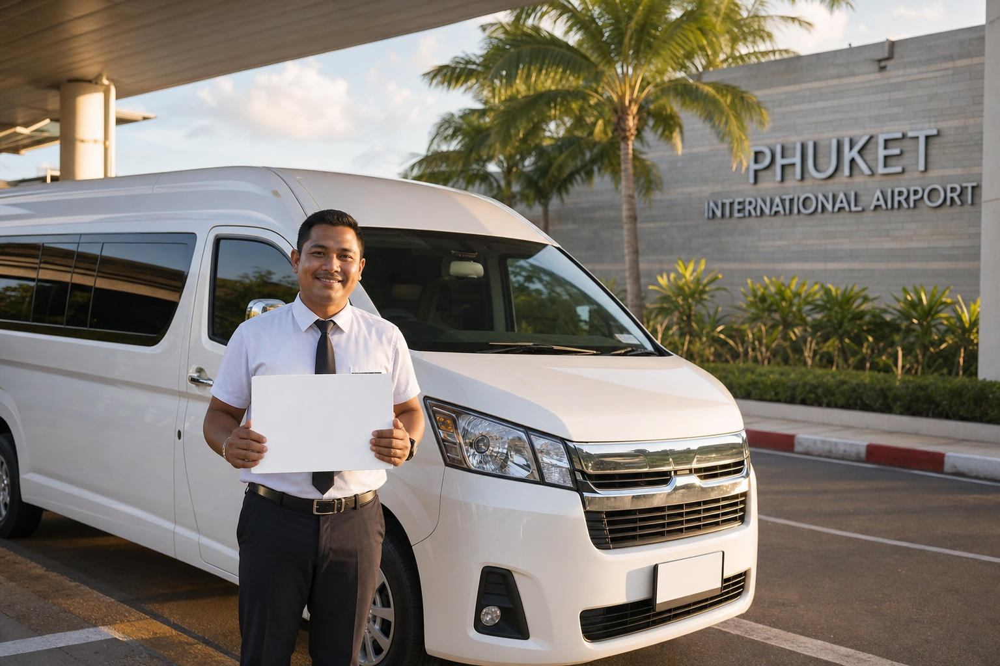

คู่มือรถตู้ภูเก็ต
รถตู้พร้อมคนขับภูเก็ต สมุย วางแผนเดินทางอย่างไร
คู่มือรถตู้พร้อมคนขับภูเก็ต สมุย อธิบายทางต่อเรือและต่อเครื่อง สิ่งที่ต้องแจ้งตอนจอง และเหตุผลที่รถตู้ไปไม่ถึงเกาะโดยตรง

Infinity Transport Phuket — รถตู้พร้อมคนขับภูเก็ต สมุย วางแผนเดินทางอย่างไร
หลายคนค้นหา รถตู้พร้อมคนขับภูเก็ต สมุย เพราะอยากย้ายจากภูเก็ตไปเกาะสมุยแบบส่วนตัว ไม่ต้องขับรถเอง และไม่ต้องต่อรถสาธารณะหลายทอด สิ่งที่ควรรู้ก่อนจองคือ ภูเก็ตกับเกาะสมุยไม่มีถนนเชื่อมถึงกัน รถตู้จึงไปได้ถึงท่าเรือหรือสนามบินบนแผ่นดิน จากนั้นต้องต่อเรือหรือเครื่องบินเข้าเกาะ
บทความนี้เป็นภาพรวมสำหรับผู้ที่กำลังเลือกทางเดินทาง ว่า รถตู้พร้อมคนขับ ครอบคลุมช่วงไหน ต้องเตรียมข้อมูลอะไร และควรอ่านคู่มือย่อยเรื่องต่อเรือ ต่อเครื่อง หรือทริปครอบครัวต่อจากตรงไหน
คำตอบสั้น: รถตู้พร้อมคนขับภูเก็ต สมุย คือการใช้รถตู้ส่วนตัวพร้อมคนขับในช่วงถนน เช่น จากที่พักหรือสนามบินภูเก็ตไปท่าเรือดอนสักเพื่อต่อเรือ หรือไปสนามบินสุราษฎร์ธานีเพื่อต่อเครื่อง รถตู้ไม่ได้ขับข้ามทะเลเข้าเกาะสมุย
สารบัญ
1. รถตู้พร้อมคนขับภูเก็ต สมุย คืออะไร
2. ทำไมรถตู้ไปไม่ถึงเกาะสมุยโดยตรง
3. สองทางที่คนส่วนใหญ่ใช้
4. ช่วงทางที่รถตู้พร้อมคนขับรับได้
5. ข้อมูลที่ควรแจ้งก่อนขอราคา
6. เช็คลิสต์ก่อนยืนยันทริป
7. ทำไมลูกค้าจึงเลือก Infinity Transport & Travel Phuket
8. คำถามที่พบบ่อย
9. สรุปท้ายบทความ
10. ติดต่อเรา (CTA)
รถตู้พร้อมคนขับภูเก็ต สมุย คืออะไร
รถตู้พร้อมคนขับภูเก็ต สมุย ในบทความนี้หมายถึงการเหมารถตู้ส่วนตัวพร้อมคนขับ เพื่อเชื่อมการเดินทางระหว่างภูเก็ตกับจุดต่อเรือหรือจุดต่อเครื่องที่ไปสมุยต่อได้ ไม่ใช่รถประจำทาง และไม่ใช่ทัวร์รวมกลุ่มที่มีตารางตายตัว
ผู้โดยสารกำหนดจุดรับในภูเก็ตได้ เช่น โรงแรม สนามบินภูเก็ต หรือจุดนัดในเมือง แล้วให้รถไปส่งที่จุดต่อเดินทางซึ่งแจ้งไว้ตอนจอง จุดที่พบบ่อยบนเส้นนี้คือท่าเรือดอนสักและสนามบินสุราษฎร์ธานี ตามที่อธิบายไว้ใน รถรับส่งภูเก็ตสุราษฎร์ธานี
ถ้าต้องการเข้าใจบริการ รถตู้ภูเก็ต ในภาพรวมก่อน เริ่มได้ที่ คู่มือรถตู้ภูเก็ต และ รถตู้พร้อมคนขับภูเก็ต
ทำไมรถตู้ไปไม่ถึงเกาะสมุยโดยตรง
เกาะสมุยอยู่ในทะเล ผู้โดยสารจึงเข้าเกาะด้วยเรือหรือเครื่องบิน แม้ค้นหาคำว่า รถตู้พร้อมคนขับภูเก็ต สมุย ก็ไม่ควรเข้าใจว่ารถคันเดียวขับจากโรงแรมในภูเก็ตไปจอดหน้าโรงแรมบนเกาะได้
แผนที่ใช้ได้จริงจึงแยกเป็นสองช่วง
- ช่วงถนน: รถตู้พร้อมคนขับจากจุดรับในภูเก็ตไปท่าเรือหรือสนามบิน
- ช่วงข้ามทะเล: ตั๋วเรือหรือตั๋วเครื่องที่ผู้โดยสารจัดแยก แล้วแจ้งเวลาให้ทีมงานเพื่อไปให้ทัน
ภาพรวมการท่องเที่ยวภาคใต้ดูได้จาก การท่องเที่ยวแห่งประเทศไทย (ททท.) ส่วนตารางเรือและเที่ยวบินให้ยึดตามผู้ให้บริการตั๋วนั้น ๆ ในวันที่เดินทาง
สองทางที่คนส่วนใหญ่ใช้
| ทาง | ช่วงรถตู้พร้อมคนขับ | ช่วงต่อไป | เหมาะเมื่อ |
|---|
| ต่อเรือ | ภูเก็ต → ท่าเรือดอนสัก | เรือไปสมุย | อยากคุมกระเป๋าในรถส่วนตัวจนถึงท่าเรือ และรับตารางเรือที่จองไว้ได้ |
| ต่อเครื่อง | ภูเก็ต → สนามบินสุราษฎร์ธานี | ไฟลท์ไปสมุย | อยากลดเวลาบนถนนหลังถึงสนามบิน หรือไม่สะดวกนั่งเรือ |
เวลาขับโดยประมาณจากบทความเส้นทางภูเก็ต–สุราษฎร์ที่มีอยู่แล้วอยู่ที่ประมาณ 3.5–4.5 ชั่วโมงไปท่าเรือดอนสัก และประมาณ 3.5–4.5 ชั่วโมงไปสนามบินสุราษฎร์ธานี ขึ้นกับจุดรับในภูเก็ต สภาพถนน และจุดแวะ ตัวเลขนี้เป็นเวลาบนถนน ไม่รวมเวลารอเรือหรือรอเครื่อง
อ่านรายละเอียดแยกได้ที่ รถตู้ไปท่าเรือต่อเรือสมุย และ รถตู้ไปสนามบินต่อเครื่องสมุย
เส้นทางรถบนแผ่นดินใกล้เคียง เช่น พังงา กระบี่ เขาหลัก อ่านต่อใน คู่มือรถตู้ภูเก็ตข้ามจังหวัด
ช่วงทางที่รถตู้พร้อมคนขับรับได้
Infinity Transport & Travel Phuket ให้บริการ รถตู้พร้อมคนขับ ในช่วงถนนจากภูเก็ตไปจุดหมายที่แจ้ง เช่น ท่าเรือดอนสัก สนามบินสุราษฎร์ธานี หรือเมืองสุราษฎร์ และรับกลับจากจุดเหล่านี้เข้าภูเก็ตได้เมื่อตกลงไว้ตอนจอง
สิ่งที่อยู่นอกช่วงรถตู้ และต้องจัดแยก
- ตั๋วเรือและที่นั่งบนเรือ
- ตั๋วเครื่องบิน
- รถรับบนเกาะสมุยหลังลงเรือหรือลงเครื่อง หากต้องการช่วงนั้น ให้ถามทีมงานว่าอยู่ในการให้บริการของทริปนี้หรือไม่ อย่าสมมติว่ามีรถรอที่ท่าเรือสมุย
ทิศทางกลับก็ใช้หลักเดียวกัน ถ้าลงเรือที่ดอนสักหรือลงเครื่องที่สุราษฎร์แล้วต้องการเข้าภูเก็ต ให้แจ้งเวลามาถึงจริง จุดรับ และที่พักปลายทางในภูเก็ต
ข้อมูลที่ควรแจ้งก่อนขอราคา
ราคาเส้น รถตู้พร้อมคนขับภูเก็ต สมุย ไม่ได้เท่ากับรับส่งในเกาะ เพราะเป็นทริปข้ามจังหวัดระยะไกล บทความนี้ไม่กำหนดราคาตายตัว ดูแนวทางบริการทั่วไปได้ที่ หน้าราคา แล้วขอใบเสนอราคาตามทริปจริงที่ หน้าติดต่อ
ข้อมูลที่ทำให้ประเมินได้ตรง
- วันที่เดินทาง และทิศทาง (ภูเก็ตไปจุดต่อสมุย หรือกลับเข้าภูเก็ต)
- จุดรับและจุดส่งให้ชัด รวมชื่อท่าเรือหรือสนามบิน
- เวลาเรือหรือเวลาไฟลท์ ถ้าจองตั๋วแล้ว
- จำนวนผู้โดยสาร ผู้ใหญ่และเด็ก
- จำนวนกระเป๋าใบใหญ่ ใบเล็ก และของชิ้นใหญ่
- จุดแวะระหว่างทาง ถ้ามี
เช็คลิสต์ก่อนยืนยันทริป
- เลือกแล้วว่าจะต่อเรือหรือต่อเครื่อง
- จองตั๋วเรือหรือตั๋วเครื่องแยกจากค่ารถตู้ และจดเวลาที่ใช้จริง
- แจ้งจุดรับในภูเก็ตเป็นชื่อที่พักหรือจุดนัดที่หาได้
- แจ้งจำนวนคนและกระเป๋า เพื่อเลือกรุ่นรถ
- เผื่อเวลาบนถนนและเวลาก่อนขึ้นเรือหรือเช็กอิน
- เก็บเบอร์ทีมงานไว้ หากไฟลท์หรือรอบเรือเลื่อน
- ถามให้ชัดว่ารถครอบคลุมถึงจุดไหน และช่วงบนเกาะสมุยแยกหรือไม่
ครอบครัวหรือกรุ๊ปที่มีกระเป๋าหลายใบ อ่านต่อที่ รถตู้พร้อมคนขับภูเก็ต สมุย สำหรับครอบครัวและกรุ๊ป
ทำไมลูกค้าจึงเลือก Infinity Transport & Travel Phuket
Infinity Transport & Travel Phuket ให้บริการรถตู้ภูเก็ตพร้อมคนขับสำหรับนักท่องเที่ยว ครอบครัว และหมู่คณะ โดยเน้นความตรงต่อเวลา การแจ้งรายละเอียดก่อนออกเดินทาง และการเลือกรถให้เหมาะกับจำนวนคนกับสัมภาระ
สำหรับเส้นนี้ ทีมงานใช้ข้อมูลจุดรับ เวลาเรือหรือไฟลท์ และจำนวนกระเป๋าที่คุณส่งมา เพื่อจัดรถช่วงถนน ดูรุ่นรถได้ที่ หน้ารถทั้งหมด และภาพรวมบริการที่ หน้าแรก
สรุปท้ายบทความ
รถตู้พร้อมคนขับภูเก็ต สมุย ช่วยให้ช่วงถนนเป็นส่วนตัวและจัดกระเป๋าได้ในรถคันเดียว จนถึงท่าเรือหรือสนามบินที่คุณเลือก ส่วนทางเข้าเกาะยังต้องเป็นเรือหรือเครื่องบิน การบอกจุดรับ เวลาตั๋ว และจำนวนสัมภาระตั้งแต่แรก ทำให้แผนทั้งสองช่วงไปด้วยกันได้
ติดต่อเรา (CTA)
กำลังวางแผนเดินทางระหว่างภูเก็ตกับสมุยอยู่ใช่ไหม
แจ้งวันที่ ทิศทาง จุดรับ–ส่ง เวลาเรือหรือไฟลท์ จำนวนคน และสัมภาระ ทีมงาน Infinity Transport & Travel Phuket จะช่วยจัด รถตู้พร้อมคนขับ ในช่วงถนนให้ตรงกับแผนของคุณ
จองรถตู้ภูเก็ต
กลับไปหน้าบทความทั้งหมด
คำถามที่พบบ่อย (FAQ)
รถตู้พร้อมคนขับจากภูเก็ตเข้าเกาะสมุยได้เลยไหม
ไม่ได้ รถตู้ไปถึงท่าเรือหรือสนามบินบนแผ่นดิน จากนั้นต้องต่อเรือหรือเครื่องบินเข้าเกาะสมุย
ทางเรือกับทางเครื่องต่างกันอย่างไร
ทางเรือใช้รถตู้ไปท่าเรือดอนสักแล้วต่อเรือ ทางเครื่องใช้รถตู้ไปสนามบินสุราษฎร์ธานีแล้วต่อไฟลท์ ตั๋วเรือและตั๋วเครื่องจองแยกจากค่ารถ
ใช้เวลาขับจากภูเก็ตนานแค่ไหน
ไปท่าเรือดอนสักหรือสนามบินสุราษฎร์ธานีโดยทั่วไปประมาณ 3.5–4.5 ชั่วโมง ขึ้นกับจุดรับและสภาพถนน ยังไม่รวมเวลารอเรือหรือรอเครื่อง
รถไปรับที่สมุยด้วยไหม
บริการในบทความนี้คือรถตู้ช่วงถนนฝั่งภูเก็ต–สุราษฎร์หรือดอนสัก รถบนเกาะสมุยต้องถามทีมงานแยก อย่าสมมติว่ามีรถรอที่ท่าเรือสมุย
กลับจากสมุยเข้าภูเก็ตจองแบบเดียวกันได้ไหม
ได้สำหรับช่วงถนนหลังลงเรือที่ดอนสักหรือลงเครื่องที่สุราษฎร์ แจ้งเวลามาถึง จุดรับ และที่พักในภูเก็ต
ราคาคิดจากอะไร
คิดจากจุดรับ–ส่ง ประเภทรถ จำนวนคน สัมภาระ และช่วงเวลา ขอใบเสนอราคาตามทริปจริงได้ที่หน้าติดต่อ ไม่ใช้ราคาเหมาในเกาะมาแทนเส้นนี้